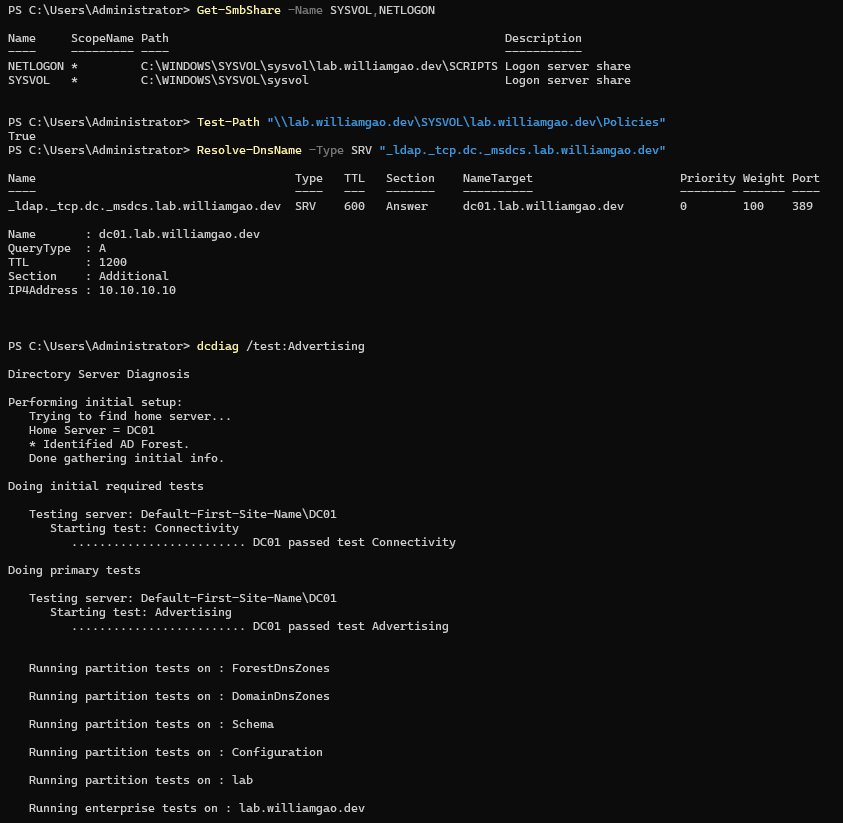
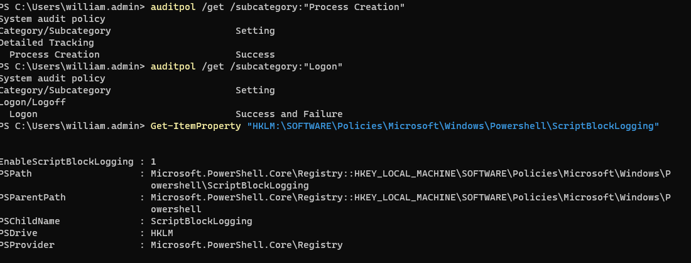
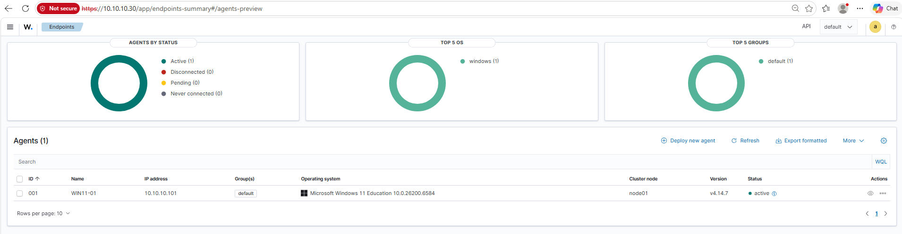
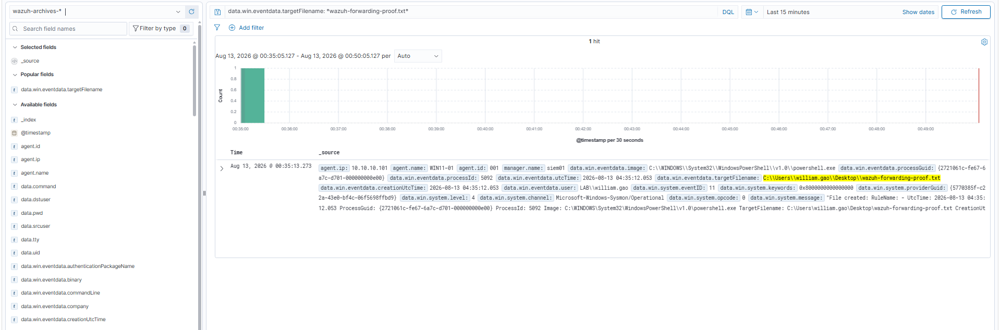

Architecture and scope

I created the lab in VMware Workstation and placed its systems behind a dedicated pfSense firewall. The firewall connects VMware NAT on its WAN side to the isolated LABNET on its LAN side. The monitored network uses 10.10.10.0/24, with pfSense at 10.10.10.1, DC01 at 10.10.10.10, SIEM01 at 10.10.10.30, and WIN11-01 at 10.10.10.101.
The design reserves pfSense OPT1 and 10.10.30.0/24 for a future isolated attack segment. Static addressing on the completed core systems made DNS, directory services, and log collection predictable during testing.
Identity and DNS
DC01 runs Windows Server 2025 as the first domain controller for lab.williamgao.dev. I installed AD DS and AD-integrated DNS, configured DNS forwarding through pfSense, and organized the directory into OUs for users, workstations, servers, service accounts, and security groups. WIN11-01 was joined to the domain and placed in the Workstation OU.
I verified the environment instead of stopping at a successful installation screen. The checks confirmed SYSVOL and NETLOGON shares, the domain controller's LDAP SRV record, and successful DCDiag tests for advertising, SYSVOL, NetLogons, and DNS.

Endpoint controls
I used Group Policy to apply security settings to WIN11-01. A workstation security group was added to the endpoint's local Administrators group, and advanced audit policy captured successful process creation plus successful and failed logons. PowerShell script-block logging was enabled so executed script content would be available for investigation.
I validated the resulting telemetry locally: Windows Security Event ID 4688 exposed process lineage and command-line context, while PowerShell Event ID 4104 recorded script blocks. This established a useful baseline before forwarding data to the SIEM.

Telemetry engineering
I installed Sysmon on WIN11-01 with a custom configuration and tested the event types most useful to early investigations. The endpoint produced Event ID 11 for file creation, Event ID 22 for DNS queries, and Event ID 3 for network connections. These records retained the initiating process, user, target path or destination, and timestamp needed to reconstruct activity.
The combination of native Windows auditing and Sysmon provides complementary views: Windows events preserve authentication and process lineage, while Sysmon adds richer file, DNS, and network detail for detection and event investigation.
SIEM deployment
SIEM01 runs Ubuntu 24.04 LTS with Wazuh 4.14.7. I deployed the Wazuh manager, Indexer, and Dashboard, confirmed the dashboard's API connection, and enrolled WIN11-01 as an active Windows agent.

Ingestion troubleshooting
Agent enrollment confirmed connectivity, but it did not guarantee that every raw Sysmon event would be searchable. When a locally generated event was not visible in the dashboard, I traced the collection path one handoff at a time instead of treating the active-agent status as proof of complete ingestion.
I enabled Wazuh's JSON event archives, configured Filebeat to collect the archive, and used the wazuh-archives-* data view in the Indexer. This made raw endpoint events queryable even when they did not trigger a predefined Wazuh alert.
End-to-end validation
To test the complete pipeline, I created wazuh-forwarding-proof.txt from PowerShell on WIN11-01. Sysmon recorded the action locally as Event ID 11. I then queried the Wazuh archive and found the same event with its agent, manager, user, initiating process, target path, and event timestamp preserved.
This controlled test demonstrated more than agent enrollment: it proved that a real endpoint action traveled through Sysmon, the Wazuh agent, the manager's raw archives, Filebeat, and the Indexer before becoming searchable in the dashboard.

Engineering decisions
- Isolation: routed the lab through pfSense instead of placing test systems directly on the physical network.
- Stable dependencies: assigned static addresses to the firewall, domain controller, and SIEM so identity and collection services remained predictable.
- Layered telemetry: combined native auditing with Sysmon instead of relying on a single event source.
- Verifiable outcomes: tested directory health and followed one controlled endpoint event through every stage of the collection pipeline.
Next phase (planned)
The next stage is to connect the isolated 10.10.30.0/24 ATTACKNET through pfSense OPT1, deploy a Kali Linux system, and run controlled adversary techniques against the lab. I will then create and tune detections, map activity to MITRE ATT&CK, investigate the resulting alerts, and document triage and containment decisions. These items are shown as planned and are not counted as completed skills yet.